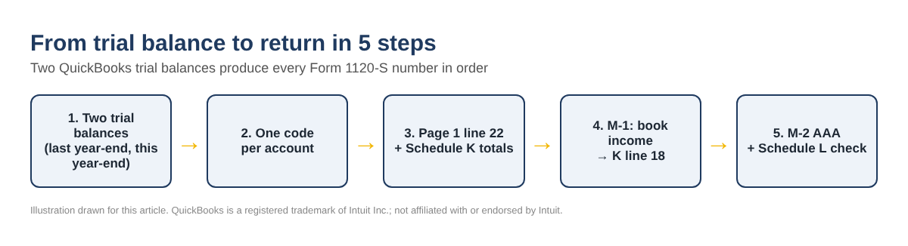
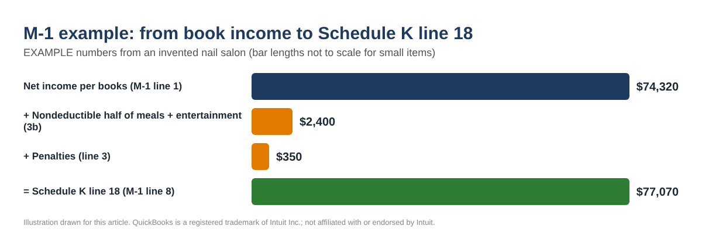
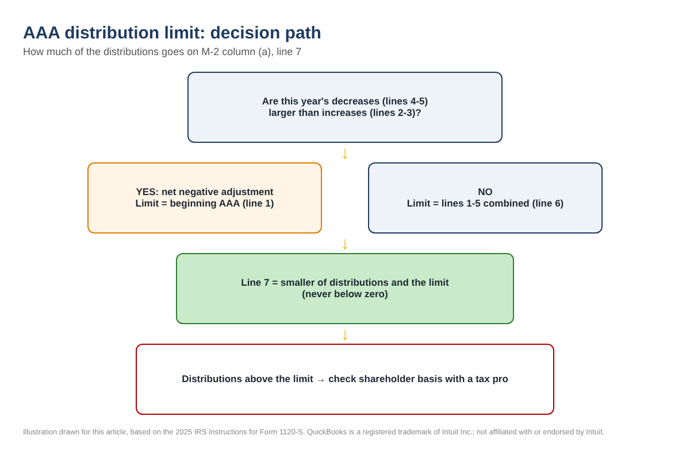

Every spring, S corporation owners who keep their books in QuickBooks hit the same wall: the net income on the Profit and Loss report is not the income on Form 1120-S, tax software says "Schedule M-1 is out of balance", or the accountant asks why retained earnings does not match the accumulated adjustments account (AAA). The numbers are usually fine. What is missing is a bridge between the books and the return. This guide shows how to build that bridge yourself with two trial balances and a spreadsheet, for both QuickBooks Desktop and QuickBooks Online.
Who this is for: owners, office managers and bookkeepers of small S corporations filing Form 1120-S for 2026 (due Monday, March 15, 2027 for calendar-year companies). Larger companies with total assets of $10 million or more must file Schedule M-3 instead of M-1, which this article does not cover.

Run a Balance Sheet as of December 31, 2025 and compare it with the end-of-year column of last year's Schedule L. If they differ, someone changed a 2025 transaction after the return was filed. Fix that first (or note the difference for your preparer), and set a closing date so it does not happen again. In QuickBooks Desktop the closing date is under Company › Set Closing Date; in QuickBooks Online it is in Account and settings › Advanced › Accounting › Close the books.
Put both reports in one sheet: column A account name, column B a code, columns C-D 2025 debit and credit, columns E-F 2026 debit and credit. Totals of debits and credits must match for each year.
The code tells the spreadsheet where the account goes. Most accounts are simple (sales go to page 1 line 1a, wages to line 8). These are the ones that create book-to-tax differences:
| Account type | Code | Where it goes |
|---|---|---|
| Business meals (50% limit) | M50 | Half on page 1 line 20, half on M-1 line 3b |
| Entertainment, tickets, club dues | ENT | M-1 line 3b |
| IRS or state penalties, fines | NDP | M-1 line 3 (other) |
| Charitable contributions | K12A | Schedule K line 12a |
| Book depreciation | P14B | Replaced by tax depreciation; difference on M-1 3a/6a |
| Municipal bond interest | TEI | M-1 line 5a, M-2 column (d) |
| Shareholder distributions (equity) | L24D | Schedule L line 24; M-2 line 7 |
Then add one helper column with the 2026 balance as a signed number, debit positive: =E2-F2. A code total is one formula, for example =SUMIF($B:$B,"M50",$G:$G) for meals, where column G holds the signed balance.
Page 1 line 22 (ordinary business income) is income minus deductions, with three changes from the books: meals count at 50% (the 2025 instructions say the corporation can generally deduct only 50% of meal expenses), nondeductible items such as penalties and entertainment are left out, and book depreciation is replaced with tax depreciation from Form 4562 (without Section 179). Separately stated items (interest, dividends, capital gains, Section 179 and charitable contributions) do not go on page 1; they go on Schedule K.
Schedule K line 18, the income/loss reconciliation, combines lines 1 through 10 and subtracts lines 11 through 12e and 16f. In a typical small company that is: line 22 + interest + dividends + gains − Section 179 − charitable contributions.
M-1 starts with net income per books and must end at the same number as Schedule K line 18. Add back expenses on the books that are not on Schedule K (line 3: the nondeductible half of meals, entertainment, penalties, officer life insurance, book depreciation above tax depreciation). Subtract income on the books that is not on Schedule K (line 5: tax-exempt interest) and tax deductions not on the books (line 6: tax depreciation plus Section 179 above book depreciation).
| M-1 line | Example A (invented nail salon) | Amount ($) |
|---|---|---|
| 1 | Net income (loss) per books | 74,320 |
| 3b | Travel and entertainment (half of $2,400 meals + $1,200 entertainment) | 2,400 |
| 3 | Other: penalties | 350 |
| 5a / 6a | Tax-exempt interest / extra tax depreciation | 0 |
| 8 | Income (loss), Schedule K line 18 | 77,070 |
All values in the tables are EXAMPLES. Check: book income $74,320 + $2,400 + $350 = $77,070, the same as Schedule K line 18. If your two numbers differ, an account has the wrong code or a Schedule K item was typed twice.

AAA is not retained earnings. Start with last year's M-2 line 8, column (a). Following the 2025 Form 1120-S instructions: increase it by income other than tax-exempt income, decrease it by losses, deductions and nondeductible expenses (other than those related to tax-exempt income), then decrease it by distributions, but not below zero. When the year's decreases are larger than its increases (a "net negative adjustment"), the distribution limit is measured before that net negative adjustment, which in practice means the beginning AAA.
Spreadsheet version: Limit = IF(increases + decreases < 0, MAX(0, line1), MAX(0, line6)) and Line 7 = -MIN(distributions, Limit), with decreases entered as negative numbers.
| M-2 line | Example C (invented cafe with a loss) | Amount ($) |
|---|---|---|
| 1 | Beginning AAA | 15,000 |
| 4 | Loss from page 1, line 22 | (70,400) |
| 5 | Other reductions (meals half, penalty) | (1,600) |
| 6 | Combine lines 1-5 | (57,000) |
| 7 | Distributions: $24,000 paid, limited to $15,000 | (15,000) |
| 8 | Ending AAA | (72,000) |
EXAMPLE values. The owner took $24,000, but only $15,000 could be charged to AAA. The other $9,000 needs a basis review by each shareholder (Form 7203); amounts above basis can be taxable.

Schedule L uses book numbers. Roll every income and expense account and the distributions account into line 24, so that line 24 = retained earnings + this year's net income − distributions. Total assets (line 15) must equal total liabilities and equity (line 27) in both columns. Finally, explain the gap between the change in line 24 and the change in AAA: tax-exempt income, depreciation differences and distributions above AAA should account for all of it. Anything left over usually means a journal entry was posted straight to equity.
One shortcut: if total receipts and total assets at year-end are both under $250,000 (Schedule B, question 11), Schedules L and M-1 are not required. M-2 is still worth keeping so next year's AAA starts right.
Because page 1 leaves out separately stated items (interest, gains, charity, Section 179), counts meals at 50%, excludes nondeductible items and uses tax depreciation. Schedule M-1 lists each difference.
Yes, losses can make AAA negative. Distributions alone cannot push it below zero.
Usually not. The books stay on a book basis and the M-1 explains the differences. Many preparers do send adjusting entries for book items (for example depreciation); post those before the closing date.
Yes, if it files Form 1120-S. Partnerships (Form 1065) use different M-1 and M-2 rules.
You can download the ready-made S-Corp Book-to-Tax Bridge 2026 for free in the Free kit download box below (Excel + PDF guide, no sign-up).
This article is for education only and is not tax, legal or accounting advice. Tax rules change; confirm with current IRS instructions or a qualified tax professional before filing. Example businesses and numbers are invented. QuickBooks is a registered trademark of Intuit Inc.; not affiliated with or endorsed by Intuit.